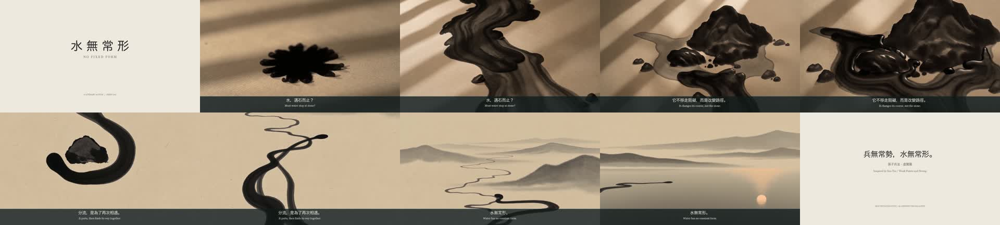

從一滴墨開始
微觀的落墨逐漸成為水流，讓抽象概念有一個可以跟隨的主體。A drop becomes a current, giving an abstract idea something tangible to follow.
Literature into moving image · 自主創作 01
No Fixed Form
一則關於遇阻、轉向與繼續的影像寓言。
以《孫子兵法・虛實篇》的水喻為起點，將抽象閱讀轉化為可見的動作。A literary film about meeting resistance, changing course, and continuing.
01 / 水無常形 · NO FIXED FORM30 SEC · 16:9 · SOUND ON · 中文字幕 / ENGLISH SUBTITLES
讓文字成為動作，
讓動作留下可以思考的空間。Let language become movement.
Let movement leave room for thought.
「兵無常勢，水無常形。」
原文以水比喻因應情勢的變化。這支作品取其「隨形而變」的意象，轉寫為日常可感的故事：水遇到石頭，分流，然後重新匯合。這是從經典出發的當代詮釋，並非逐句還原整篇兵法。
The source uses water as a metaphor for responding to changing conditions. This film borrows that image to tell a smaller story: a current meets a stone, divides, and rejoins. It is an interpretation, not a literal retelling of the chapter.
成片前三句「水，遇石而止？」「它不移走阻礙，而是改變路徑。」「分流，是為了再次相遇。」為本作原創敘事；「水無常形」出自古文。片中英文均為本作譯寫，並非援引既有英譯版本。
障礙仍在，水已找到另一條路。
The obstacle remains.落墨 → 流動 → 遇石
分流 → 匯合 → 開闊

成片畫面選集 / FRAMES FROM THE FILM視覺語彙：紙白、墨黑、微暖光
微觀的落墨逐漸成為水流，讓抽象概念有一個可以跟隨的主體。A drop becomes a current, giving an abstract idea something tangible to follow.
阻礙保留在畫面裡。故事的轉折來自水的改變，而非障礙的消失。The stone stays. The turn in the story comes from the water changing course.
分流接向開闊的水域，讓結尾停在延續，而不是勝負。The divided streams return to open water. The ending is a continuation.
選取《虛實篇》的水喻，區分文學原句與當代改寫，將核心收斂為「遇阻後改變路徑」。
以落墨、溪流、遇石、分流、匯合、湖面串接故事；規劃兩段各 12 秒的生成素材，再以剪輯完成 30 秒作品。
使用 Seedance 2.0 生成兩段動態影像。提示指定鏡位、動作順序、紙墨質感與聲音方向；文字於後製加入，避免將生成字形當成定稿字幕。
以 FFmpeg 組織片段、片長、雙語字幕與聲音，將生成素材整理成可獨立觀看的完整作品。素材生成與最終剪輯分開記錄。
品管重點包含轉場連貫、字幕可讀性、聲畫關係與輸出格式。影片、字幕、創作說明及流程紀錄一併交付；具體檢查結果以流程紀錄為準。
“An imposing dark stone interrupts the stream; flowing water reaches the stone and visibly divides left and right rather than stopping.”實際提示節錄：用明確動作描述「適應」，讓水分流而不是停住。
閱讀完整提示 / Read prompt ↗“Two flowing ink-water streams bending around opposite sides of a single large dark stone and rejoining below it.”實際提示節錄：以重新匯合作為第二段的敘事起點。
閱讀完整提示 / Read prompt ↗製作說明：本作為 AI 協作自主作品，以 Seedance 2.0 動態生成及 FFmpeg 後製完成。製作紀錄保留實際生成、剪輯與字型修正過程；本作為自主創作。
由一句經典萃取敘事命題，保留出處，再將自己的詮釋清楚標示。Interpret a source with care, and distinguish quotation from original writing.
把「順勢」轉成可見的因果：遇到障礙、改變方向、繼續流動。Turn an abstract theme into a legible visual progression.
從提示、動態影像到字幕與聲音整合，交出可播放、可下載、可檢查的作品。Connect concept, moving image, text and sound in a reviewable deliverable.
為共識人智 Artist & Storyteller 應徵準備的自主作品。這個案例用來展示創作思路與實際產出；職務工具、工作安排與合作條件仍待雙方確認。